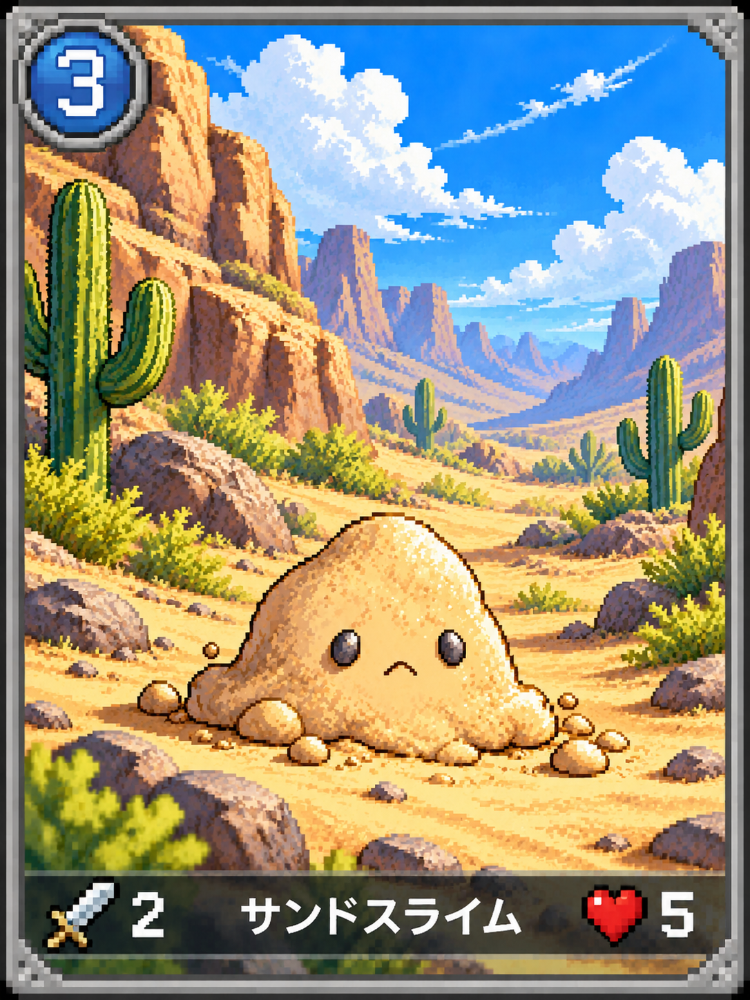

▣
PIXEL CARD
STUDIO
CARD CREATION WORKSPACE
準備中
↶
↷
新規
編集データを保存
⇩
PNGを書き出す
LIVE PREVIEW / 1086 × 1448
カードプレビュー
完成見本を表示
−
自動
＋
⤢
1086 × 1448 px
完成見本（比較用）

レイヤーを選択すると位置をドラッグ調整できます
元画像比率を保持 / 透過PNG対応
レイヤーを追加
✕
画像パーツや文字を好きな順番で重ねられます。
▧
PNG・画像を追加
外枠・装飾・アイコンなど
T
文字を追加
カード名・数値・説明など
▦
単色の背景を追加
背景の色を自由に調整